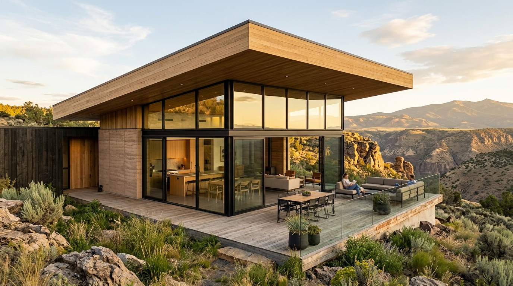
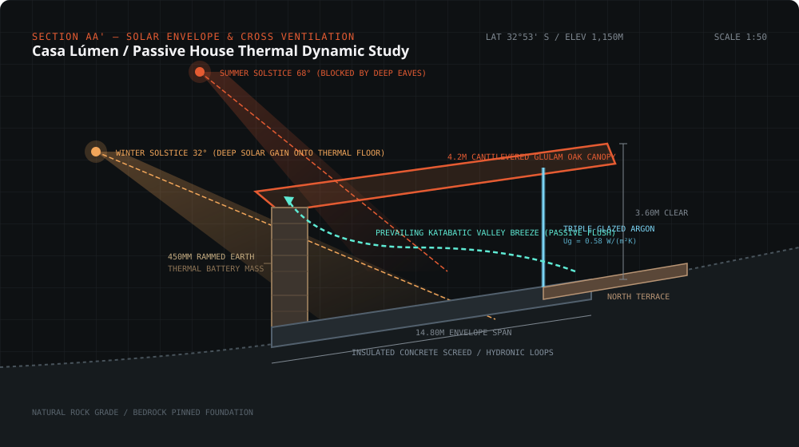
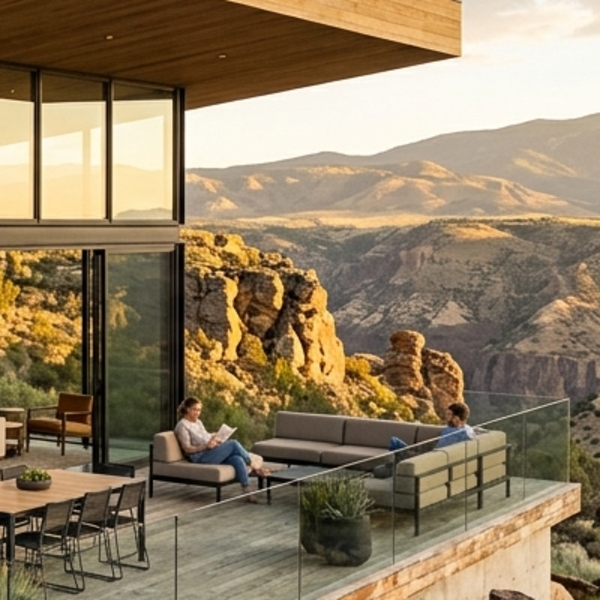
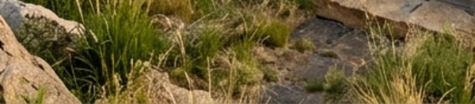
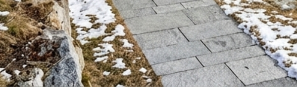
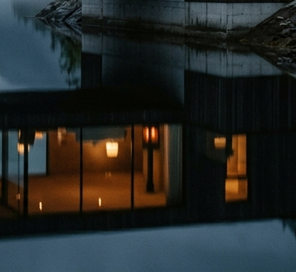
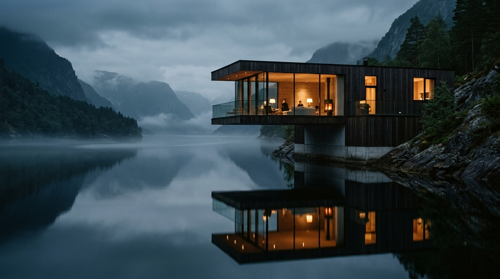
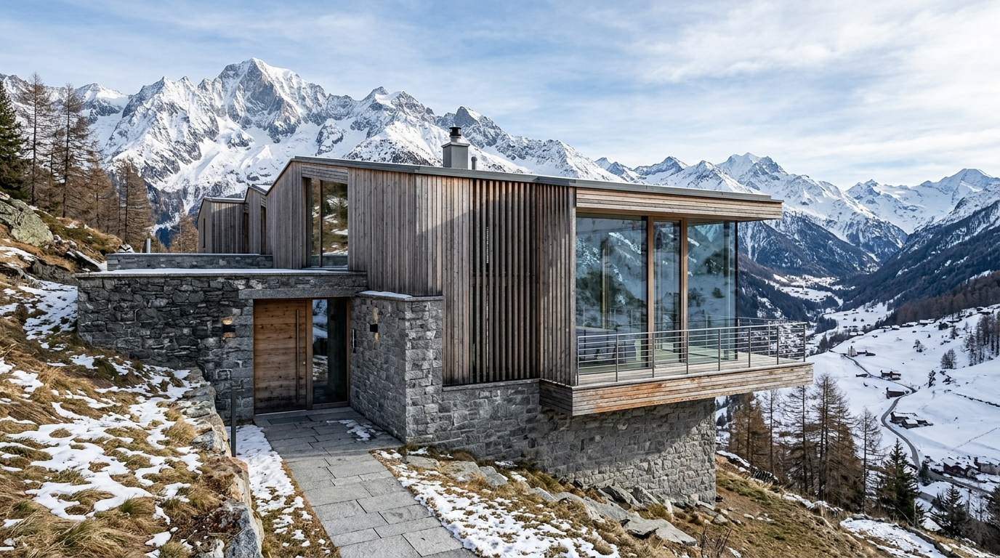

PASSIVE HOUSE PLUS
Casa Lúmen
Mendoza, Argentina
320 m²
·
2025
·
Glulam Oak & Rammed Earth
Kaelen is an independent architecture studio designing low-energy homes that read their site first — orientation, wind, views and ground — and build everything else around it.

Every line begins with micro-climate telemetry. We analyze seasonal sun angles, katabatic canyon breezes, and geological bedrock formations before drawing a single wall.





Standard architecture imposes form onto the land. We do the inverse: we let the geographic, solar, and atmospheric forces of the parcel sculpt the envelope.
Every roof pitch, overhang depth, and window placement is mathematically tuned to the solar zenith of the site's latitude, yielding free seasonal warmth and shade.
We leverage prevailing katabatic ridge currents to drive natural displacement ventilation, eliminating noisy, energy-intensive mechanical air conditioning.
Rather than bulldozing terraces, we step structures down natural contours. Foundations are pin-mortised directly into bedrock, leaving subterranean aquifers undisturbed.
We prioritize mass timber, unreinforced stone, and unfired earthen blocks that store atmospheric carbon for centuries and return harmlessly to earth at end of life.


We document our failures, field measurements, and thermal imaging data openly to advance low-energy building craft.
Adding inches of synthetic insulation offers diminishing thermodynamic returns. How micro-positioning along solar azimuth curves solves 70% of heat retention before insulation begins.
Investigating the psychoacoustic calming effect of solid end-grain glulam ceilings in alpine residences during high-velocity wind storms.
Eliminating continuous concrete footing trenches through pneumatic diamond core drilling and stainless expansion rods anchored directly in gneiss bedrock.
We welcome clients, collaborators, and researchers to our physical workshops to examine material mockups, site models, and solar heliodon simulators.